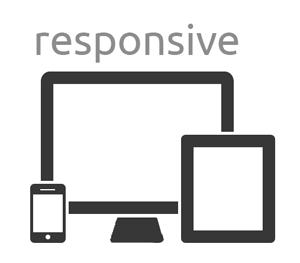
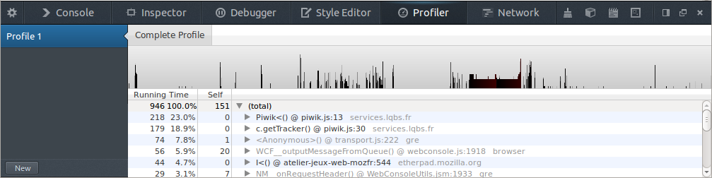

Faire des jeux Web
Les jeux, c'est bien, faites-en
Par Adrian et Nical
Canvas
- Pour l'affichage
- 2D
-
Adapté pour :
- beaucoup d'images
- dessin de formes
- animations
WebGL
- Pour l'affichage
- 3D
-
Adapté pour :
DOM
- Pour l'affichage
- 2D
-
Adapté pour :
- peu d'images ou d'éléments
- interfaces
SVG
- Pour l'affichage
- 2D
-
Adapté pour :
- éléments vectoriels
- filtres
WebSockets
- Communication bi-directionnelle en temps réel
- Client / Serveur
- Utile pour le multijoueurs
WebRTC
- Communication en pair à pair
- Permet l'échange de données, vidéo, voix, fichiers...
Contraintes : le réseau
Attention au temps de téléchargement des ressources
-
Optimiser les images et les sons
-
Penser au cache (et aux impacts du cache pendant le développement)
-
Penser aux réseaux "faibles" (Edge, 3G... )
Contraintes : les plate-formes
Le Web est la plate-forme
MAIS
-
Taille des écrans différentes
-
Souris + clavier VS tactile

Performances
Utiliser le profiler

Performances
Attention à l'overdraw
-
Dessiner coute cher
-
Minimiser les opérations de dessin ou de scale
Performances
En JavaScript, éviter :
try, with, eval
Méthodologie : la roue
Il ne faut pas la réinventer !
-
Utiliser les outils à disposition
- Simplifier la création de contenu
- Les artistes doivent pouvoir s'exprimer !
Méthodologie : itérations
Minimiser les temps d'itération
- Avoir un produit testable le plus tôt possible
- Puis faire des améliorations progressives